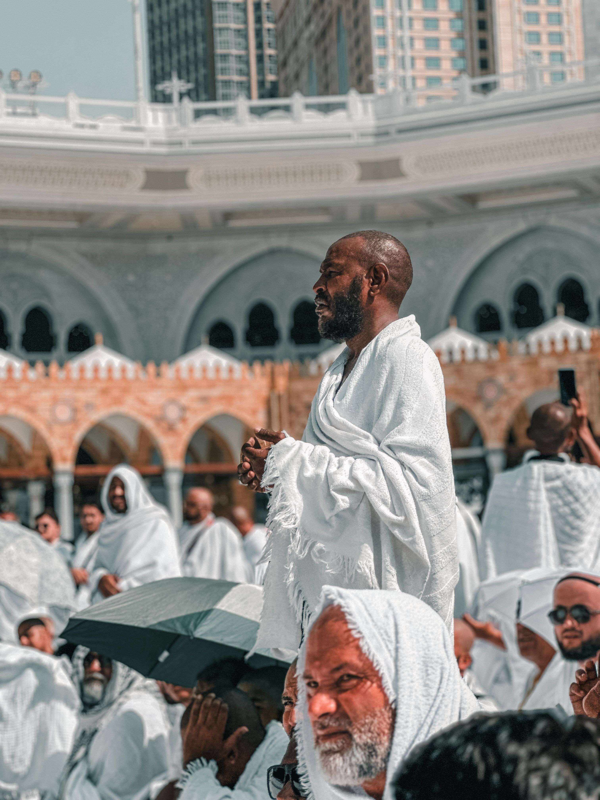

Step
01
Ihram
الإحرام
Ihram – Entering the Sacred State
Begin with a sincere intention, recite the Talbiyah and wear the Ihram garments. Ihram must be entered at or before the Miqat – the boundary set for pilgrims.
- Prepare and purify. Take a bath (ghusl), trim nails and remove unwanted hair beforehand. Men may apply perfume to the body – not the Ihram cloth – before the intention.
- Wear the Ihram. Men wear two plain white unstitched sheets (izar and rida) and sandals that leave the ankles uncovered. Women wear modest everyday clothing and do not cover the face or hands.
- Make the intention at the Miqat. Say “Labbayk Allahumma ‘Umrah” – “Here I am, O Allah, for Umrah.”
- Recite the Talbiyah often – men aloud, women softly – until you begin Tawaf.
Flying from India? Your flight crosses the Miqat in the air, before landing in Jeddah. Put on the Ihram before boarding (or before the Miqat announcement) and make the intention when the crew announces it. Travelling to Madinah first? Enter Ihram at Dhul Hulayfah when leaving for Makkah.
الإحرامIhram
